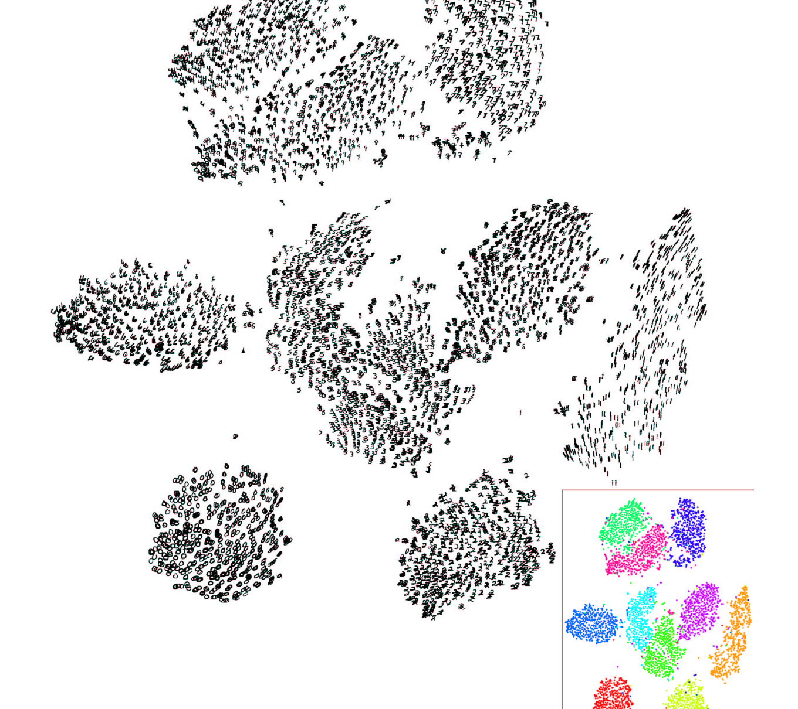

On this page
Neighbors first.
What if your data is a Swiss roll? No flat shadow, no viewing angle, no rotation ever shows it unrolled. Every linear projection crushes it into mush. I hit this wall looking at real embeddings: PCA showed one big smear where I knew there were ten clean digit clusters. PCA asks: which 2D shadow loses the least? t-SNE asks a better question: which 2D arrangement keeps the right neighbors together? Same data, totally different question, and the answer became the most famous visualization in machine learning.
t-SNE never projects anything. It does something sneakier. First, for every point in high dimensions, write down who its neighbors are, as probabilities: each point looks at every other point and assigns a neighbor probability that decays with distance. Second, scatter all the points onto a 2D canvas at random. Third, compute the same neighbor probabilities down in 2D, and shuffle the points around until the 2D probabilities match the high-D ones. The shuffling is plain gradient descent on a KL divergence, how far the map's neighbor list is from the true one. The neighbors are the contract; everything else is negotiable.
Two things make it work where older methods failed. First, every point gets its own neighborhood width, tuned so each point has about perplexity effective neighbors. Dense regions get tight kernels, sparse regions get wide ones. Second, the 2D side uses a heavy-tailed Student-t distribution instead of a Gaussian. That is the famous trick, and it fixes the crowding problem: in 2D there is not enough room to honor every medium-range distance honestly, so the t-distribution gives up on far distances gracefully and spends all its effort keeping neighbors together.
Picture every point grabbing the hands of its closest neighbors, then everyone shuffles around a dance floor until nobody is holding a stranger's hand. The t-distribution is the bouncer: it stops caring who stands far away and only breaks up the wrong hand-holds.
The setup: a toy Swiss roll, a sheet curled up in 3 dimensions. Drawn flat it looks like a plain sheet, but every probability below comes from the true 3D distances. Each point also gets a position on the 2D map, which is what we optimize.
Every point turns its distances into neighbor probabilities: near points get the biggest shares, far points almost nothing. This list is the contract the 2D map has to match.
Perplexity sets roughly how many neighbors each point listens to. Crowded and lonely regions need different kernel widths to honor the same count, so every point tunes its own width: a point in a crowd gets a tight kernel, a lonely point a wide one.
Down in 2D, a plain Gaussian would crush everything into the middle. The heavy-tailed Student-t lets far pairs stay vaguely far, which gives clusters room to separate: the map's probabilities use that heavy tail, not the Gaussian.
The KL cost asks one question: do the 2D neighbor probabilities match the high-D ones? Breaking a true neighborhood costs far more than misplacing a distant stranger; both mistakes are what the cost counts.
Gradient descent moves each point like a spring system: true neighbors pull it in, overcrowded strangers push it away. When the springs balance, the map is done.
The five steps, written as five lines, from neighbor probabilities to the 2D map:
Each list above looks one way: pj|i is i's pull toward j, and j's own list gives a different number for the same pair. The KL cost compares one joint list, so the two directions are averaged into a single joint probability for the pair: pij is pj|i plus pi|j, divided by 2N for the N points. That averaged list is the P the cost checks the map against.
pj|i how likely point i picks j as a neighborσi each point's kernel widthqij the map's version of the neighbor probability, with a heavy Student-t tail so clusters can separateC the KL cost: the mismatch between the two neighbor lists, the number the steps push downhillthe pull: true neighbors attractthe push: the overcrowded repeldij the distance from point i to point j (the subscripts name the two points)P, Q the high-D and map neighbor lists∇C the gradient: the springsΣ add over; exp e to the power of; ² squared← gets: updated to≠ not equal to; −1 to the power -1: one overKL how far Q's neighbor list is from P'sWhat this shows
1 links: each orange dot's strongest neighbor ties. A thicker link means a stronger tie; width is the whole message, there are no numbers.2 rings: each dashed ring is one point's kernel width at the same perplexity. The orange dot sits in a dense crowd and gets a tight ring; the teal dot sits in a sparse stretch and gets a wide one.3 inset: the gray curve is the Gaussian tail, the red curve the heavy Student-t tail. The horizontal axis is distance and the vertical is similarity weight. The heavy tail lets clusters separate instead of piling up in the middle.4 highlights: red links are true neighbors the map tore apart, purple links are strangers it crowded together. The cost punishes the red kind most.3 on: color runs along the roll, so neighbors share a color. Color staying together means the map kept the right neighbors.5 does.One honest note first: the source notebook for this page is an empty shell. One empty code cell, no outputs. So this tool does not replay notebook output. It runs the canonical t-SNE example live, in your browser: 300 points in 24 dimensions, grouped into 4 clusters, each hiding 3 sub-clusters. Think of each point as one digit image: 24 numbers here, 784 in MNIST.
The tool computes real t-SNE: for each point it searches for the kernel width (how far that point's similarity reaches) that hits the perplexity, averages the two directions' probabilities into joint probabilities, then runs momentum gradient descent on the KL cost from a random start. No libraries, all vanilla JS. Nothing moves at rest. t-SNE never sees the labels, only pixel similarity. The dots crawl from noise into clusters driven by those probabilities alone.
Visualizing Data using t-SNE (van der Maaten and Hinton, JMLR 2008).
6,000 MNIST digits, each one 784 pixels, laid out by t-SNE. Each dot is one digit image; dots that land near each other looked similar to the algorithm. The ten clean clumps are the ten digits, and t-SNE was never told the labels. Rebuilt from Figure 7 of van der Maaten and Hinton (JMLR 2008). JMLR 9:2579-2605

Perplexity sets how many neighbors each dot listens to: at 5 the clusters shatter into islands, at 90 they pack into crowded dots.
PCA is the linear answer; t-SNE is the nonlinear answer.
How to play
300 gray dots start as random noise. They crawl from noise into clusters, and the clusters match the labels t-SNE never saw. It grouped the points by pixel similarity alone.t-SNE maps are gorgeous and liars in equal measure. Five things I wish someone had told me before I trusted my first one.
300 points, and the pairwise math means twice the points is four times the work. The paper's MNIST figure in 6,000 MNIST digits, laid out by t-SNE used 6,000 digits with a random-walk approximation; naive t-SNE on all 70,000 MNIST digits would melt your laptop. Barnes-Hut, the standard fast approximation for pairwise methods like this, exists for exactly this reason.The pattern to keep: whenever a method promises a 2D map of high-D data, ask what it preserves and what it sacrifices. PCA preserves variance and sacrifices nothing it can measure linearly. t-SNE preserves neighborhoods and sacrifices global distances. Nothing preserves everything: a 24-dimensional cloud does not fit on a dance floor without somebody stepping on somebody's toes.